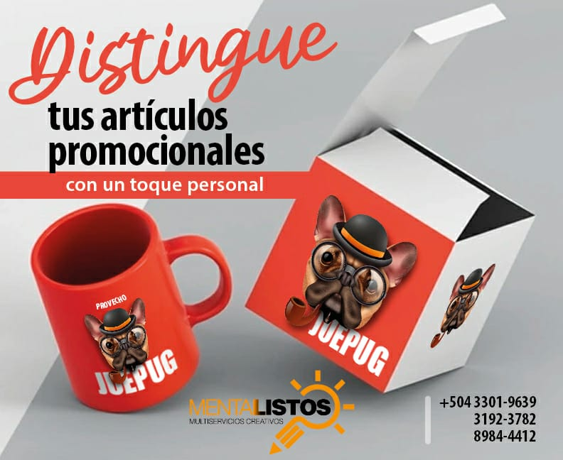

Mentalistos
Arte
Es el concepto que engloba todas las creaciones realizadas por el ser humano para expresar una visión sensible acerca del mundo, ya sea real o imaginario. Mediante recursos plásticos, lingüísticos o sonoros, el arte permite expresar ideas, emociones, percepciones y sensaciones.
Durante tres milenios antes de los territorios de la actual Honduras florecieron muchas culturas, entre ellas la civilización Maya, Tawahkas, Pech, entre otros, estas culturas desarrollaron diversas artes, entre ellas las pinturas rupestres, la cerámica, escultura, música entre otras, además de diversas ciencias como matemáticas y astronomía.

Cultura
Se refiere al conjunto de bienes materiales y espirituales de un grupo social transmitido de generación en generación a fin de orientar las prácticas individuales y colectivas. Incluye lengua, procesos, modos de vida, costumbres, tradiciones, hábitos, valores, patrones, herramientas y conocimiento.
Honduras es un país multicultural y plurilingüe. Aunque la mayoría de su población es mestiza o producto de la mezcla entre etnias hondureñas, africanas y europeas, Honduras posee nueve grupos étnicos que mantienen su cultura y la mayoría de ellos su idioma. Estos grupos son: Garífuna, Miskitu, Tawahka, Pech, Chortí, Lenca, Tolupán, Nahua, y el Isleño.

Deportes
Es una actividad física, básicamente de carácter competitivo y que mejora la condición física del individuo que lo practica. El Comité Olímpico Internacional (COI), señala que “toda persona debe tener la posibilidad de practicar deporte sin discriminación de ningún tipo y dentro del espíritu olímpico, que exige comprensión mutua, solidaridad, y espíritu de amistad y de juego limpio”.
En Honduras se practican diversos deportes, pero el fútbol es el más popular entre los hondureños. Además, se practican atletismo, béisbol, baloncesto, karate, judo, natación, ciclismo, en general todas las disciplinas olímpicas, pero las más populares son las mencionadas. El Comité Olímpico Hondureño se crea en 1956 y representa los ante el COI.